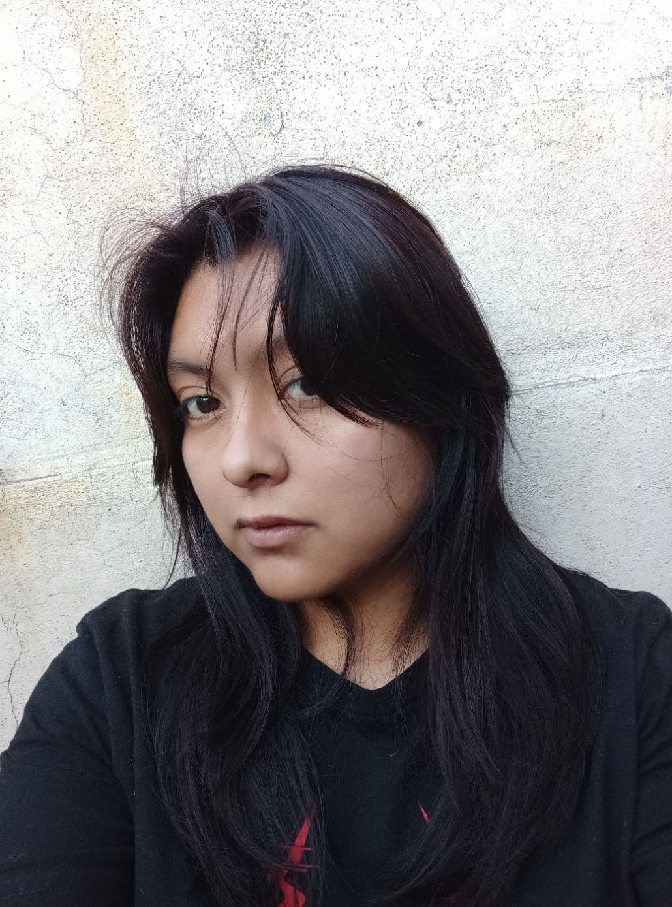
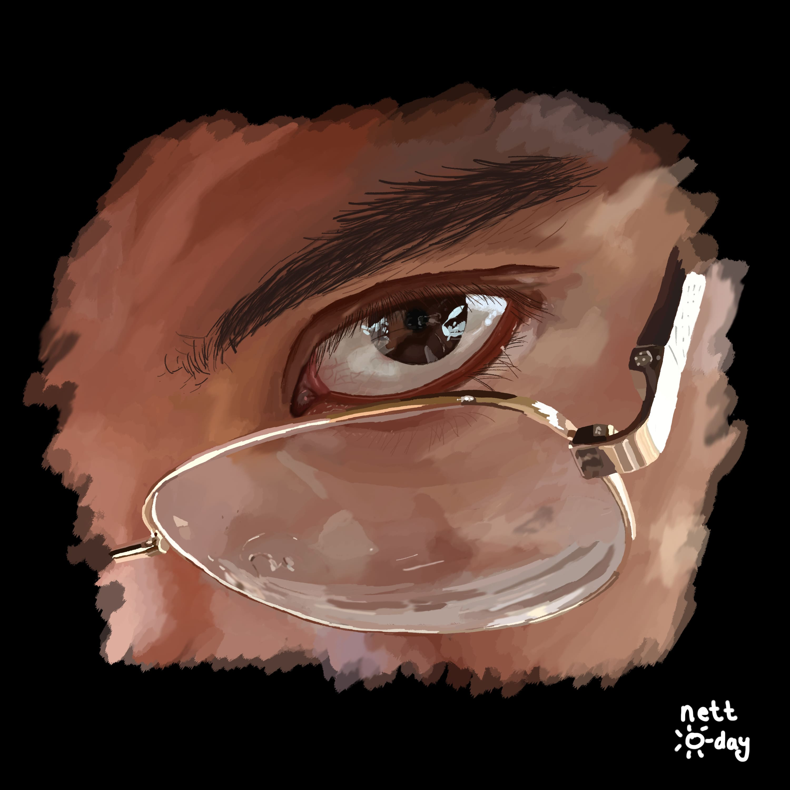
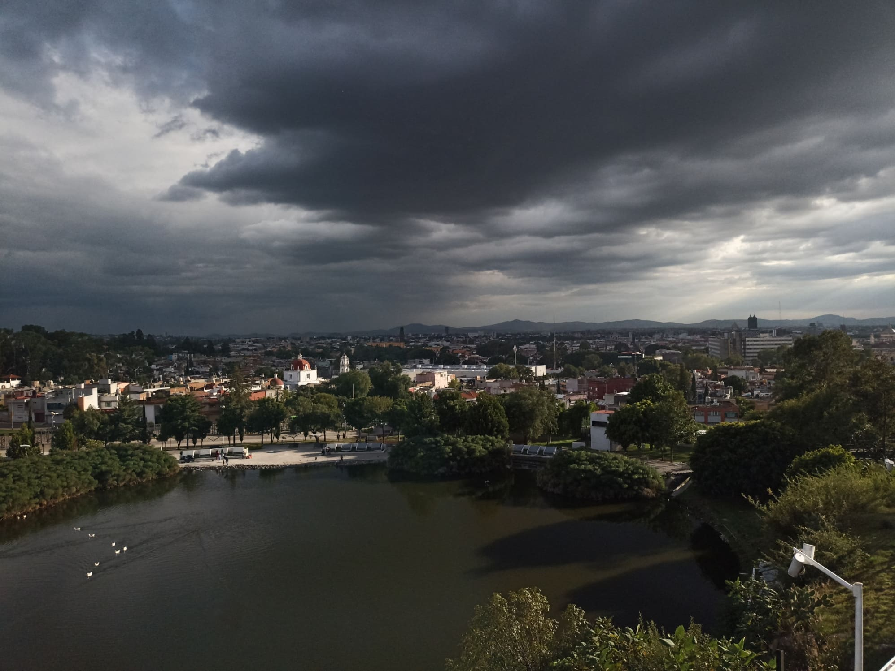
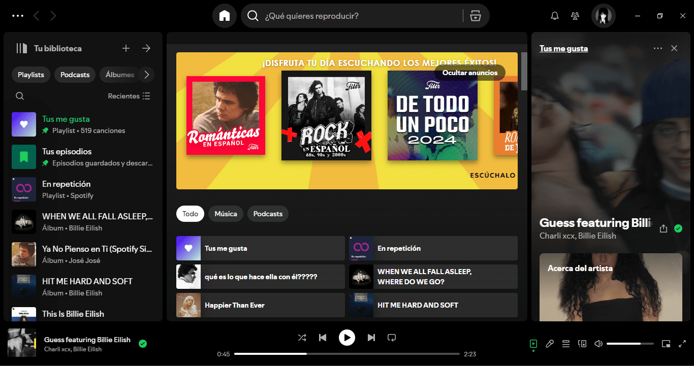

¡Hola!
Mi nombre es Dianet Barranco, actualmente soy estudiante de séptimo semestre de la licenciatura de Diseño Gráfico en la Benemérita Universidad Autónoma de Puebla
Tengo 21 años y soy del municipio de Acajete, Puebla; un poco lejos de la cuidad, mis padres son Angelica Barranco Martínez y Aurelio Barranco Flores, como muchos pensaran, no, no son familiares ni primos lejanos, son de familias diferentes e incluso de lugares diferentes. El apellido Barranco tiene origen de España como muchos apellidos que existen en Latinoamérica y en México. Soy la segunda hija de tres hijos, siendo la primera hija de mis padres, tengo otros dos hermanos, José Armando de 25 años y Hannya de 15 años, con ambos tengo una excelente relación, pero por lo general me llevo mucho mejor con mi hermana.

Hobbies
Toda persona tiene hobbies favoritos o no tan favoritos, yo tengo algunos que con gusto explicare
Ilustrar
Desde niña me ha encantado dibujar, principalmente flores, personajes o incluso paisajes, con el tiempo me han llegado interesar dibujar otras cosas más complejas como lo son partes del cuerpo, flores mas detalladas, personajes propios, etc. Gracias a mi carrera he podido desarrollar más este pasatiempo, incluso tengo una cuenta de Instagram donde subo cada proyecto que hago ya sea académico o profesional.
Uno de mis favoritos es este le he llamado “La ventana del…” por la famosa frase de “Los ojos son la ventana del alma”, la imagen esta sacada de una fotografía que he tomado por el 2023 de una persona que es muy especial para mí, además que actualmente es uno de mis mejores trabajos, a veces cuando haces las cosas con amor salen bien.
Caminar
Por lo general el escuchar que una persona le gusta caminar es raro, pero ciertamente a muchas personas les gusta hacer esto, a mi en particular por que puedo despejarme un momento y conocer lugares, por algunas experiencias buenas mi lugar favorito para caminar ha sido la zona de los fuertes del estado de Puebla, es tranquilo, muy lindo y más que nada tiene buenas vistas hacia la cuidad.
Siempre me gusta salir con mis amigos o con mi novio, es una linda experiencia.
Escuchar música
El hobbie más común para una persona es escuchar música, pero es inevitable, supongo que sin la música la vida sería muy aburrida.
En particular la escucho todo el tiempo, en casa, en el transporte, en el trabajo, cuando hago tarea, cuando salgo a caminar, cuando estoy con alguien es más incluso cuando me baño escucho música, nunca me limito y mis gustos son variados puedo escuchar cualquier música que pongan en la radio, en el transporte pero siempre voy a preferir mi playlist.

Mis materias preferidas
Ilustracion
La Ilustración es el periodo histórico y cultural del siglo XVIII, llamado también Siglo de las Luces. Durante esta época tuvo lugar una serie de cambios que se manifestaron en distintos ámbitos (social, filosófico, político, económico, científico, etc.). En esta época se impone la razón, y se empieza a valorar la figura del librepensador. En el pensamiento ilustrado se une el intelectualismo con el empirismo (basado en la experiencia). Esto sienta las bases del progreso, del camino hacia la perfección, al cual se debe llegar bajo la tutela del pensamiento ilustrado: el conocimiento hace libre al hombre. El movimiento ilustrado, surgido en Francia, se extendió por diferentes territorios europeos y americanos. Posteriormente, desembocaría en revoluciones y corrientes que posteriormente llevaron a la independencia de colonias y posesiones europeas en América.
Desarrollo tipografico
La tipografía es un conjunto de caracteres que tienen en común una estética. En el otro extremo tenemos a la caligrafía que significa el escribir de forma correcta cada una de las letras. Mientras que la rotulación, o conocida hoy en día como lettering, es el arte de dibujar las letras. Podríamos decir que la tipografía tiene su inicio en el momento en que aparece el papel. Para ello, hay que remontarse al siglo XV en Alemania, donde aparece la figura de Johannes Gutenberg quien creó la imprenta. A través de distintos moldes fue creando los tipos móviles que podían plasmar las letras. Gracias a ello, imprimió el primer libro que conocemos: la Biblia de 42 líneas. El tipo de letra utilizado para ello forma parte del grupo de tipografías antiguas. Al ser algo tan novedoso y que llamó la atención de todos, la técnica se fue repitiendo y perfeccionando por toda Europa. Fue principalmente en Italia donde tuvo más repercusión. Allí nacen las grandes imprentas y se crean las que conocemos como tipografías humanísticas venecianas.
Cartel
Un cartel es una pieza gráfica diseñada con el propósito de comunicar un mensaje específico a un público determinado. Por lo general, combina imágenes, texto y elementos visuales para transmitir información de manera efectiva. Suelen encontrarse en lugares públicos para que la información llegue a más personas. Está constituido por una lámina de papel, cartón o cualquier otro material, donde se fija un mensaje de naturaleza visual que puede estar compuesto por texto, imágenes y demás recursos gráficos. Como tal, la palabra proviene del provenzal cartel. Dependiendo de su función, existen distintos tipos de carteles. Aunque palabra cartel también puede referirse a un convenio u organización con intereses económicos o delictivos.